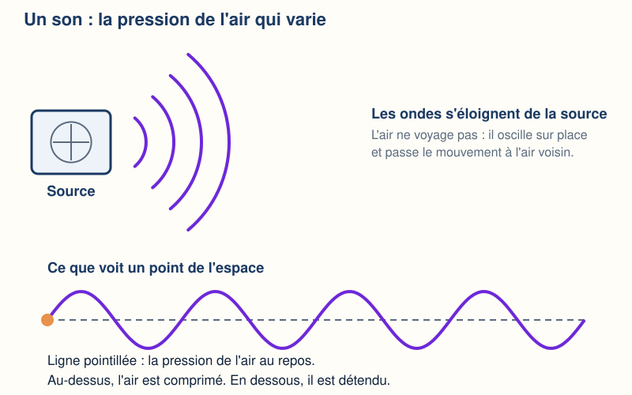
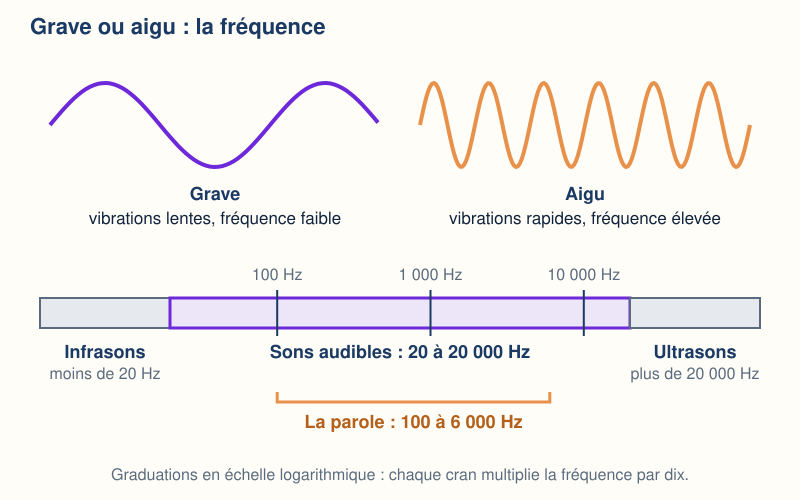
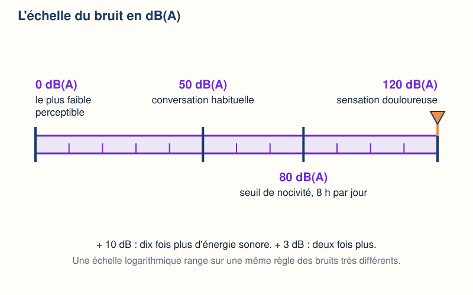
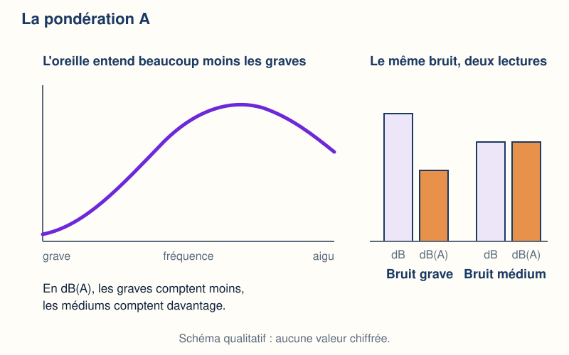
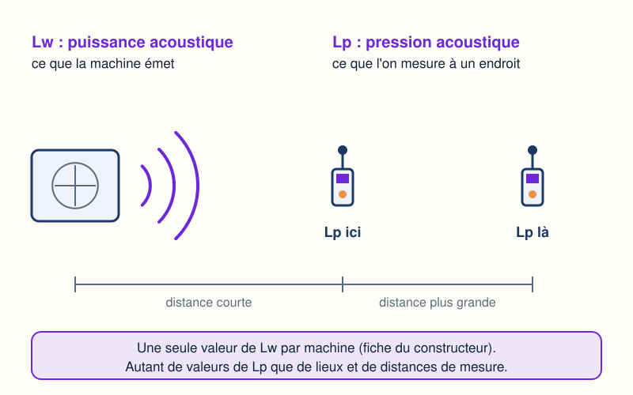
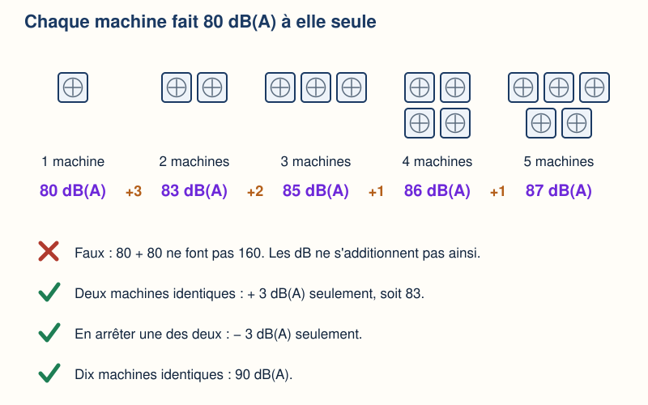
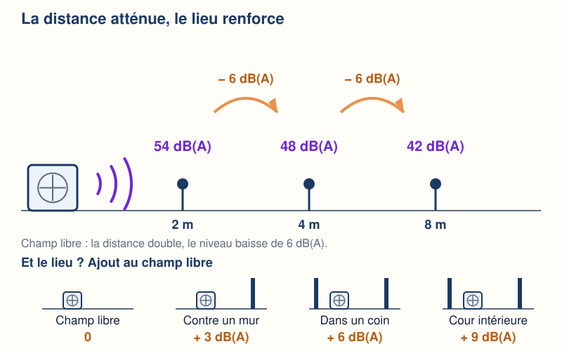
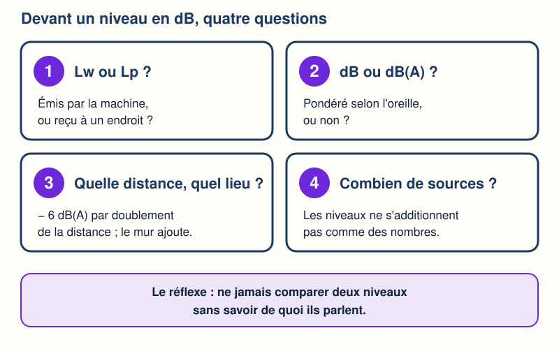

Mini-station commentée · 8 écrans et 4 questions · environ 10 minutes
Objectif
À la fin de la station, vous savez ce qu'est un son, pourquoi un niveau de bruit se compte en décibels sur une échelle logarithmique, ce que change la pondération A, et vous savez distinguer la puissance acoustique Lw (ce que la machine émet) de la pression acoustique Lp (ce que l'on mesure à un endroit). Vous savez aussi pourquoi deux sources ne font pas le double, et comment la distance et le lieu changent le niveau reçu.
Référentiel : TP TECVC, REAC TP-00133 — compétences CP9 (climatisation : choisir un groupe extérieur sur sa puissance acoustique et juger de son effet à l'implantation) et CP7 (ventilation tertiaire : ventilateurs, réseaux et bouches font du bruit dans les locaux).
Chaque écran peut être expliqué à voix haute : le bouton « Écouter » commente ce que vous voyez. Rien n'est dit qui ne soit aussi écrit.
1 / 12
Écran 1 sur 8
Un son, c'est de la pression qui varie
Un son est une vibration de l'air qui se propage sous la forme d'ondes acoustiques. Autour d'une machine qui tourne, la pression de l'air, en un point donné, monte un peu au-dessus de sa valeur de repos, puis redescend, et cela recommence sans cesse.
L'air ne va pas de la machine à l'oreille : il oscille sur place et passe le mouvement à l'air voisin. C'est cette variation de pression que l'oreille — ou le microphone d'un sonomètre — détecte.
Un bruit, c'est un son perçu comme gênant : la gêne est subjective, mais le niveau, lui, se mesure.

L'onde s'éloigne de la source ; en un point, la pression monte et descend.
Écran 2 sur 8
Grave ou aigu : la fréquence
Le nombre de vibrations par seconde est la fréquence, exprimée en hertz (Hz). Vibrations rapides : fréquence élevée, son aigu. Vibrations lentes : fréquence faible, son grave.
l'oreille humaine entend de 20 à 20 000 Hz ; en dessous, les infrasons ; au-dessus, les ultrasons ;
la parole occupe la plage de 100 à 6 000 Hz.
Deux grandeurs, deux unités : l'hertz dit la hauteur du son, le décibel dit sa force.

À gauche le grave, à droite l'aigu ; en bas, la place de la parole dans la zone audible.
Écran 3 sur 8
Le décibel : pourquoi une échelle logarithmique
On mesure physiquement le niveau d'un bruit en décibels (dB). Repères donnés par l'INRS, en dB(A) :
0 : le bruit le plus faible qu'une oreille humaine puisse percevoir ;
50 : le niveau habituel d'une conversation ;
80 : le seuil de nocivité, pour une exposition de 8 h par jour ;
120 : un bruit qui provoque une sensation douloureuse.
Le décibel compare une quantité à une référence, par un logarithme. Conséquence : + 10 dB, c'est dix fois plus d'énergie sonore ; + 3 dB, c'est deux fois plus. Une échelle ordinaire ne pourrait pas ranger sur une même règle des bruits aussi différents.

Le curseur passe d'un repère à l'autre ; il termine sur 120 dB(A).
Écran 4 sur 8
La pondération A : l'oreille entend moins les graves
L'oreille n'est pas également sensible à toutes les fréquences : elle entend beaucoup moins les graves que les fréquences moyennes. Pour rendre compte du niveau réellement perçu, on utilise le décibel pondéré A, noté dB(A) : la mesure est corrigée fréquence par fréquence.
Pour les niveaux très élevés, l'oreille ne réagit pas de la même manière : on utilise alors le décibel pondéré C, noté dB(C). Le sonomètre est l'instrument de mesure de base.
Ce que cela change pour vous : un « dB » sans lettre et un « dB(A) » ne sont pas la même mesure. Le Code du travail exprime l'exposition quotidienne en dB(A) et la pression de crête en dB(C) (article R. 4431-2) — les valeurs sont dans la station « Les seuils ».

Le dB(A) écarte une part de ce que l'oreille n'entend pas.
Écran 5 sur 8
Lw et Lp : ce que la machine émet, ce que l'on reçoit
Lw, puissance acoustique : la capacité d'émission sonore de la source, indépendamment de son environnement. Elle est mesurée en laboratoire ; c'est la valeur qui permet de comparer directement les appareils entre eux.
Lp, pression acoustique : la grandeur perçue par l'oreille et mesurée par le sonomètre. Pour une source donnée, elle dépend de l'environnement d'installation et de la distance de la mesure.
Pour le technicien d'études : on choisit un groupe en comparant les Lw des fiches constructeur, puis on vérifie ce que cela donne, en Lp, chez le voisin ou dans le local. Comparer le Lw d'un appareil au Lp d'un autre, c'est comparer deux grandeurs différentes.

Un Lw par machine ; un Lp par point de mesure.
Écran 6 sur 8
Deux sources ne font pas le double
Les niveaux en décibels ne s'ajoutent pas directement : c'est une échelle logarithmique. Si une machine produit 80 dB(A) (INRS) :
quand deux machines identiques fonctionnent, en arrêter une ne baisse le niveau que de 3 dB(A).
Pourquoi : ce sont les énergies sonores qui s'additionnent. Deux sources identiques donnent deux fois plus d'énergie, soit 10 fois le logarithme de 2, environ 3 dB de plus.
Quand l'écart est grand, la source la plus forte domine : deux sources de 60 et 66 dB(A) donnent 67 dB(A) (AFPAC).

Chaque machine ajoutée pèse moins que la précédente.
Écran 7 sur 8
La distance atténue, le lieu renforce
La distance. En champ libre — sans surface qui renvoie le son —, le niveau de pression acoustique est réduit de 6 dB(A) à chaque doublement de la distance. Exemple AFPAC : 54 dB(A) à 2 m, 48 dB(A) à 4 m, 42 dB(A) à 8 m. La baisse suit les doublements, pas les mètres.
Le lieu. Un groupe posé au sol ou sur une terrasse est en champ libre. Contre un mur : + 3 dB(A). Dans un coin : + 6 dB(A). Dans une cour intérieure : + 9 dB(A) (au moins). Le son se réfléchit et se cumule.
Conséquence pour l'implantation : un coin ajoute 6 dB(A), autant qu'un doublement de distance en retire. Éviter les angles et les cours intérieures, s'éloigner des limites de propriété et des fenêtres.

La distance retire des décibels par paliers ; un mur, un coin ou une cour en ajoutent.
Écran 8 sur 8
Bilan et le réflexe
Un son est une pression qui varie ; la fréquence (Hz) dit sa hauteur, le décibel sa force.
Le décibel est logarithmique : + 3 dB = deux fois plus d'énergie, + 10 dB = dix fois plus.
Le dB(A) tient compte de l'oreille, qui entend moins les graves.
Lw : ce que la machine émet. Lp : ce que l'on mesure à un endroit.
Deux sources identiques : + 3 dB seulement. Distance doublée : − 6 dB en champ libre. Un mur, un coin, une cour : + 3, + 6, + 9 dB.
Le réflexe : ne jamais comparer deux niveaux sans savoir de quoi ils parlent.

Quatre questions à poser devant un niveau en dB.
Question 1 sur 4
Deux machines identiques, 80 dB(A) chacune, marchent ensemble. On mesure…
Rappel de l'écran 6 — les niveaux ne s'ajoutent pas comme des nombres.
Question 2 sur 4
La fiche du constructeur donne le Lw d'un groupe extérieur. On peut en déduire…
Rappel de l'écran 5 — un Lw par machine, un Lp par point de mesure.
Question 3 sur 4
54 dB(A) à 2 m en champ libre. Que lit-on à 4 m, toujours en champ libre ?
Rappel de l'écran 7 — la baisse suit les doublements de distance.
Question 4 sur 4
Pourquoi exprime-t-on souvent un bruit en dB(A) ?
Rappel de l'écran 4 — l'oreille entend moins les graves.
Les correspondances de la station
Les seuils (même sous-ligne)
— les valeurs du Code du travail et du voisinage sont exprimées avec ces décibels : il faut savoir lesquels.
Mesurer (même sous-ligne)
— comment un sonomètre donne un Lp, et pourquoi une mesure a des règles.
PAC et voisinage (même sous-ligne)
— du Lw de la fiche constructeur au Lp chez le voisin : le cas d'école.